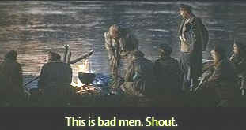

| Dersu Uzala/B+,C- |
| Kino/1971/140/WS 2.35 |
Dersu Uzala is Kurosawa at his most contemplative, pondering the interaction of man and nature and man and man. The most exciting moments of this outdoor drama are restrained and the tension evolves from the patient methodology of the filmmaker. Whether rescuing Dersu from impending river rapids or frantically cutting stalks of grass to build a shelter
against the menacing icy night, it is the pacing of these scenes that mesmerize the viewer.
|
 |
|
Beautiful lighting is retained. ©Kino |
The film is structured in three acts along with a prologue and epilogue. In 1902, Captain Arseniev leads a Russian surveying expedition to Siberia where he encounters Dersu, a native huntsman, who impacts upon the mission and the captain. After surviving the journey, Dersu and the Arseniev part, with their emotions finally trying to connect as each calls out the
other's name over the increasing distance. Five years later, Arseniev heads a mission to Siberia and again connects with Dersu, but the years have taken their toll on the aging hunter and by this journey's end it becomes more and more apparent. The captain asks Dersu to come back with him to stay at his home in a small city. Dersu agrees out of a combination of love and desperation. The short third act depicts Dersu as a fish out of
water living with Arseniev's family until it is obvious that Dersu belongs in his beloved woods.
Rest assured that the Kurosawa camera for focus on the visual splendor that the stark winter landscapes and the dense forests have to offer. Just as the wilderness offers a majestic stillness, so too do the widescreen compositions. The elegance and simplicity of style are directly related to the subject matter. Just as Arseniev learns so much from the simple hunter Dersu, we too can hear the voice of the still
woods.
The widescreen framing of Dersu Uzala is extremely important. Kurosawa uses the entire widescreen aspect to compose exquisite images. The transfer also recreates the delicate lighting that is a hallmark of this film. There a number of scenes composed around a crackling fire which have been wonderfully captured. The faces are warmly lit and the atmosphere is wholly captured. While overall image resolution is
acceptable, there are some soft scenes. This is the least of the problems with the DVD. It appears that the transfer is either composite or does not have the proper 3/2 pulldown coding. This results in fine detail jitter and straight diagonal lines occasionally breaking into stair-steps. The color saturation is good, but element damage exposes excessive color pulsing. There is also excessive grain in these elements. The compression
isn't too competent at taming the grain. There are a number of scenes that exhibit element damage, but the scratches and dirt are visible only in short bursts and it does not undermine the impact of this visually stunning movie. The sound is adequate. |
|

The Feature Archive has articles ranging from Akira Kurosawa to Blonde Bimbos.

Click on the image above for a "dream interview" with director John Ford.

Movie Rage: Death in the Aisles
Everyone knows what it feels like to get angry at the movies these days. Here's a humorous but not so delightful view of big screen misery.

They may be judgmental, but that's the point, isn't it. Lots of DVD reviews plus news and more.
Click on the link to visit the judge's chambers.
 A love of movies drives this small DVD production company, Synapse Films. Currently specializing in horror and cult
films. Watch for new DVD releases of film festival independents as Synapse branches out. A love of movies drives this small DVD production company, Synapse Films. Currently specializing in horror and cult
films. Watch for new DVD releases of film festival independents as Synapse branches out.

The National Film Preservation Foundation (NFPF) is the nonprofit organization created by the U.S. Congress to save America's film heritage.
|